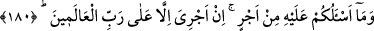
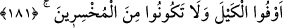
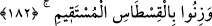
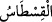

180. Buna karşı sizden hiçbir ücret istemiyorum. Benim ücretimi verecek olan,
ancak âlemlerin Rabbidir.
“Buna karşı”rasûl/gönderilmiş kelimesinin delâlet ettiği gibi peygamberlik, tebliğ ve
öğretme görevini yerine getirme karşılığında “sizden hiçbir ücret” mükâfât
“istemiyorum. Benim ücretimi” amelimin sevâbını/karşılığını ve hizmetimin ücretini
“verecek olan, ancak âlemlerin Rabbidir.”
Çünkü herkese feyz ve güzel terbiye Allah Teâlâ’dandır. Özellikle O’nun katından bir
emirle memur olan kimselerin terbiyesi O’na aittir.
181. Ölçüyü tastamam yapın, (insanların hakkını) eksik verenlerden olmayın.
“Ölçüyü tastamam yapın,” eksik ölçerek insanların haklarını “eksik verenlerden
olmayın.” İnsanların hukukunu uygulamakta noksan davranan ve zarar verenlerden
olmayın; herkesin hakkını verin.
182. Doğru terazi ile tartın.
Tartılacak şeyleri “Doğru terazi” yani düzgün ve âdil terazi “ile tartın.”
“ bir şeyin miktarını bilmektir.
el-Kâmûs’ta der ki: “ terazi veya terazilerin en doğrusu yahut hangi terazi
olursa olsun miyar/kıstas gibi olan adâlet terazisi demektir. Ya da bu kelime aslen
Rumca olup sonradan Arapça’ya girmiştir (muarrab).
183. İnsanların hakkı olan şeyleri kısmayın. Yeryüzünde bozgunculuk yaparak
karışıklık çıkarmayın.
“İnsanların
hakkı
olan
şeyleri
kısmayın.”
Bu
ifâde
tahsisten
sonra
ta’mim/genelleştirmedir. Keşfü’l-esrâr’da der ki: “Bu husus lafızların en âmm/genel
olanı ile zikredildi. Bununla başkasının malını men edenler, işi tartmak olan, celep,
sarraf ve döviz işleriyle uğraşanların tümü muhataptır.”